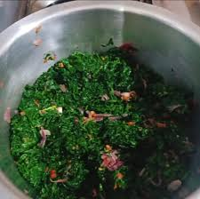

MURSIK TAMU

The following is a recipe to prepare this delicious vegetable.
The recipe is easy to follow and does not require too many ingredients.
The propotions can be doubled or tripled according to the serving.
Ingredients:
- 2 kg managu(night shade leaf)
- 1 litre clean water
- 3 tablespoons of heavy cream
- 1/2 teaspoon Salt
- 1 large onion
- 6 tablespoon of oil
- Cooking stick or something to stir with
Steps:
- Boil the managu leaves in a pot
- when it has boiled for 10 minutes, lower the heat and let it boil for 5minutes.
- Drain the water
- Prepare the onions by slicing it into small pieces
- Add cooking oil into a clean pan/sufuria
- Add the onions and stir for 2 minutes until golden brown then add the salt.
- Take the boiled managu and add to the mixture and stir until its fully covered with the mixture fully
- Let it cook for 5 minutes while you stir slowly.
- When its ready, add the heavy cream and stir for 2 minutes
SERVE IT HOT!!